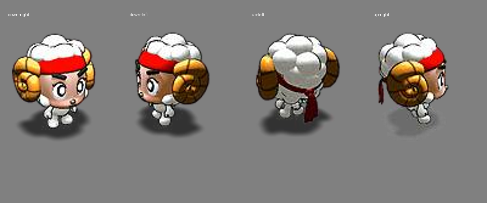

22 · 11 组 NPC 与神灵
左侧为旧版导出，右侧为高清候选。本次重点查看招手、拍翼、转头、抬手与折耳，身体应保持稳定。可选 0.25 倍慢放，或暂停拖动时间轴。
23 · 同源小地图图标
遭遇与失物招领
这六段在原作中都是两秒的静态插画保持；本轮保留剧情、时序，以及由游戏填写的标题和文字区。
24 · 卷毛四方向与七类动作
固定角色母版与分层关节驱动。下方可分别查看动作、自然移动、暂停和慢速取样。
卷毛原动作参考

22–24 已通过本轮视觉验收。20 接待员继续单列；其他可选人物、人物附属图及附身覆盖图仍为后续批次。